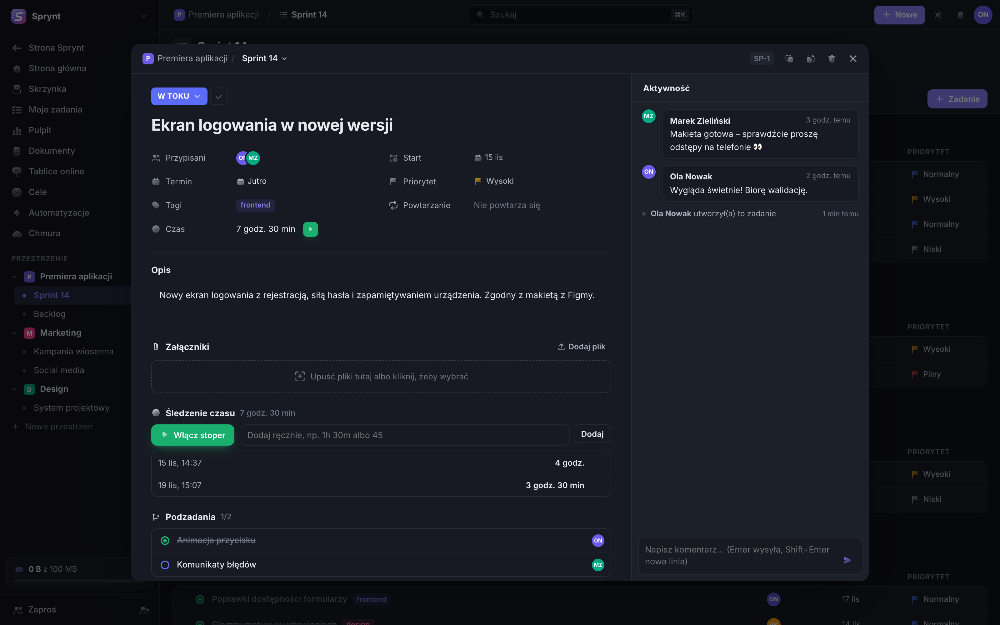

<!doctype html>
<html lang="pl">
<head>
<meta charset="utf-8" />
<meta name="viewport" content="width=device-width, initial-scale=1" />
<title>Sprynt – film</title>
<link rel="icon" href="../img/logo.svg" type="image/svg+xml" />
<link rel="preconnect" href="https://fonts.googleapis.com" />
<link rel="preconnect" href="https://fonts.gstatic.com" crossorigin />
<link rel="stylesheet" href="https://fonts.googleapis.com/css2?family=Inter:wght@400;500;600;700;800;900&display=block" />
<style>
  /* Film promocyjny Sprynt: scena 1920×1080, cały stan liczony z czasu (render(t)) –
     dzięki temu klatki można nagrywać deterministycznie (?capture), a w przeglądarce
     animacja odtwarza się na żywo. */
  :root { --bg: #07080d; --ink: #f4f5fa; --ink-2: #a9afbf; --brand: #8b7cf6; --pink: #e84393; }
  html, body { margin: 0; height: 100%; background: #000; overflow: hidden; }
  body { display: grid; place-items: center; font-family: Inter, system-ui, sans-serif; color: var(--ink); -webkit-font-smoothing: antialiased; }
  #stage { position: relative; width: 1920px; height: 1080px; overflow: hidden; background: var(--bg); transform-origin: 50% 50%; flex: none; }
  .abs { position: absolute; left: 0; top: 0; }
  .scene { position: absolute; inset: 0; display: none; }
  .glow { position: absolute; width: 1400px; height: 1400px; border-radius: 50%; pointer-events: none; }
  .g1 { background: radial-gradient(circle, rgba(124, 92, 255, .32), rgba(124, 92, 255, 0) 62%); }
  .g2 { background: radial-gradient(circle, rgba(232, 67, 147, .22), rgba(232, 67, 147, 0) 62%); }
  .g3 { background: radial-gradient(circle, rgba(0, 168, 132, .13), rgba(0, 168, 132, 0) 62%); }
  .grid { position: absolute; inset: -40px; background-image: radial-gradient(circle, rgba(255,255,255,.06) 1.2px, transparent 1.5px); background-size: 40px 40px; }
  .vign { position: absolute; inset: 0; background: radial-gradient(ellipse at 50% 45%, transparent 55%, rgba(0,0,0,.55)); pointer-events: none; }

  /* Napisy */
  .cap { position: absolute; left: 120px; top: 64px; width: 1680px; }
  .eyebrow { display: inline-flex; align-items: center; gap: 10px; height: 40px; padding: 0 16px 0 12px; border-radius: 20px; background: rgba(139, 124, 246, .16); color: #c4b9ff; font-weight: 700; font-size: 19px; letter-spacing: .02em; }
  .eyebrow svg { color: #c4b9ff; }
  .cap h2 { margin: 16px 0 0; font-size: 62px; line-height: 1.04; font-weight: 800; letter-spacing: -.035em; white-space: nowrap; }
  .cap h2 em { font-style: normal; background: linear-gradient(90deg, #a596ff, #e84393); -webkit-background-clip: text; background-clip: text; color: transparent; }
  .word { display: inline-block; will-change: transform, opacity; }

  /* Okno przeglądarki */
  .win { position: absolute; left: 280px; top: 236px; width: 1360px; border-radius: 18px; background: #12141b; box-shadow: 0 50px 120px -30px rgba(0,0,0,.85), 0 0 0 1px rgba(255,255,255,.09), 0 0 80px -20px rgba(124,92,255,.35); overflow: hidden; transform-origin: 50% 0; will-change: transform, opacity; }
  .win-bar { height: 44px; display: flex; align-items: center; gap: 8px; padding: 0 16px; background: #181a22; border-bottom: 1px solid rgba(255,255,255,.06); }
  .win-bar i { width: 12px; height: 12px; border-radius: 50%; background: #ff5f57; }
  .win-bar i:nth-child(2) { background: #febc2e; } .win-bar i:nth-child(3) { background: #28c840; }
  .win-url { margin: 0 auto; display: flex; align-items: center; gap: 8px; height: 28px; padding: 0 16px; border-radius: 8px; background: rgba(255,255,255,.06); color: var(--ink-2); font-size: 14px; font-weight: 600; transform: translateX(-30px); }
  .win-url img { width: 16px; height: 16px; }
  .win-vp { position: relative; width: 1360px; height: 850px; overflow: hidden; background: #0f1117; }
  .shot { position: absolute; left: 0; top: 0; width: 1600px; height: 1000px; transform-origin: 0 0; will-change: transform; }
  .win.half { width: 820px; }
  .win.half .win-vp { width: 820px; height: 600px; }

  /* Kursor, kliknięcie, podświetlenie */
  .cur { position: absolute; left: 0; top: 0; width: 44px; height: 44px; z-index: 20; color: #fff; filter: drop-shadow(0 4px 8px rgba(0,0,0,.6)); will-change: transform; pointer-events: none; }
  .cur svg { width: 44px; height: 44px; }
  .ripple { position: absolute; width: 60px; height: 60px; margin: -30px 0 0 -30px; border-radius: 50%; border: 3px solid #a596ff; z-index: 19; pointer-events: none; }
  .hl { position: absolute; border-radius: 16px; border: 3px solid #a596ff; box-shadow: 0 0 0 6px rgba(165,150,255,.18), 0 0 40px rgba(165,150,255,.45); pointer-events: none; z-index: 5; }

  /* Pastylki funkcji */
  .chip { position: absolute; display: flex; align-items: center; gap: 10px; height: 54px; padding: 0 20px 0 14px; border-radius: 16px; background: rgba(28, 31, 42, .92); border: 1px solid rgba(255,255,255,.1); box-shadow: 0 20px 40px -14px rgba(0,0,0,.7); font-weight: 650; font-size: 20px; white-space: nowrap; z-index: 6; will-change: transform, opacity; }
  .chip .ci { width: 34px; height: 34px; display: grid; place-items: center; border-radius: 10px; background: rgba(139,124,246,.2); color: #b9adff; }

  /* Tablica Kanban – przeciągana karta */
  .ghost { position: absolute; z-index: 8; border-radius: 10px; background-repeat: no-repeat; will-change: transform; }
  .slot { position: absolute; z-index: 7; border-radius: 10px; }
  .colext { position: absolute; z-index: 6; background: rgb(25, 29, 45); border-radius: 0 0 12px 12px; }

  /* Tablica online – nowa karteczka */
  .wnote { position: absolute; width: 190px; height: 160px; padding: 14px 14px 16px; box-sizing: border-box; border-radius: 4px; background: #fde68a; color: #1f2430; font-size: 16px; line-height: 1.4; box-shadow: 0 1px 1px rgba(0,0,0,.06), 0 10px 20px -12px rgba(0,0,0,.45); transform-origin: 0 0; z-index: 8; }
  .wnote .caret { display: inline-block; width: 2px; height: 1.1em; margin-left: 1px; vertical-align: -3px; background: #1f2430; }
  .wnote.sel { outline: 2px solid #8b7cf6; outline-offset: 3px; }
  .wbar { position: absolute; display: flex; align-items: center; gap: 4px; padding: 5px; background: #171a22; border: 1px solid #262a35; border-radius: 10px; box-shadow: 0 12px 32px -6px rgba(0,0,0,.6); transform-origin: 50% 100%; z-index: 9; white-space: nowrap; font-size: 13px; }
  .wbar .sw { width: 22px; height: 22px; border-radius: 50%; margin: 0 1px; }
  .wbar .sw.on { box-shadow: 0 0 0 2px #171a22, 0 0 0 4px #8b7cf6; }
  .wbar .btn { display: flex; align-items: center; gap: 6px; height: 30px; padding: 0 11px; margin-left: 4px; border-radius: 8px; background: #8b7cf6; color: #fff; font-weight: 600; }
  .wtask { position: absolute; width: 230px; box-sizing: border-box; padding: 12px 14px; display: flex; flex-direction: column; gap: 6px; background: #171a22; border: 1px solid #262a35; border-left: 4px solid #8b7cf6; border-radius: 10px; box-shadow: 0 10px 20px -14px rgba(0,0,0,.5); transform-origin: 0 0; z-index: 8; font-size: 12px; color: #a8aebb; }
  .wtask b { color: #e8eaf0; font-size: 14.5px; font-weight: 650; }
  .wtask .dot { display: inline-block; width: 12px; height: 12px; border-radius: 50%; border: 2px solid #87909e; vertical-align: -2px; margin-right: 6px; }
  .wtask .row { display: flex; align-items: center; gap: 8px; }
  .av { width: 20px; height: 20px; border-radius: 50%; display: inline-grid; place-items: center; color: #fff; font-size: 8.5px; font-weight: 650; background: #6c5ce7; }

  /* Intro / outro */
  .logo { position: absolute; width: 190px; height: 190px; left: 865px; top: 230px; filter: drop-shadow(0 30px 60px rgba(108,92,231,.55)); will-change: transform, opacity; }
  .halo { position: absolute; left: 960px; top: 325px; width: 190px; height: 190px; margin: -95px 0 0 -95px; border-radius: 56px; border: 2px solid rgba(165,150,255,.6); }
  .brand { position: absolute; left: 0; width: 1920px; top: 450px; text-align: center; font-size: 132px; font-weight: 900; letter-spacing: -.05em; }
  .tag { position: absolute; left: 0; width: 1920px; text-align: center; font-weight: 800; letter-spacing: -.035em; }
  .tag.t1 { top: 650px; font-size: 64px; } .tag.t2 { top: 728px; font-size: 64px; }
  .grad { background: linear-gradient(90deg, #a596ff, #e84393 55%, #f5a623); -webkit-background-clip: text; background-clip: text; color: transparent; }
  .cta { position: absolute; left: 960px; top: 740px; transform: translateX(-50%); display: flex; align-items: center; gap: 14px; height: 84px; padding: 0 40px; border-radius: 20px; background: #fff; color: #0b0c12; font-size: 32px; font-weight: 800; box-shadow: 0 30px 70px -20px rgba(139,124,246,.8); white-space: nowrap; }
  .sub { position: absolute; left: 0; width: 1920px; top: 860px; text-align: center; color: var(--ink-2); font-size: 24px; font-weight: 500; }

  /* Siatka funkcji */
  .feat { position: absolute; width: 360px; height: 120px; display: flex; align-items: center; gap: 18px; padding: 0 26px; box-sizing: border-box; border-radius: 22px; background: rgba(24, 26, 36, .9); border: 1px solid rgba(255,255,255,.09); box-shadow: 0 24px 50px -20px rgba(0,0,0,.8); font-size: 26px; font-weight: 700; will-change: transform, opacity; }
  .feat .fi { width: 64px; height: 64px; flex: none; display: grid; place-items: center; border-radius: 18px; background: linear-gradient(135deg, rgba(139,124,246,.28), rgba(232,67,147,.2)); color: #c9bfff; }

  .fade { position: absolute; inset: 0; background: #000; pointer-events: none; z-index: 100; }
  .progress { position: absolute; left: 0; bottom: 0; height: 4px; background: linear-gradient(90deg, #8b7cf6, #e84393); z-index: 101; }
  body.capture .progress { display: none; }
</style>
</head>
<body>
<div id="stage">
  <div class="grid" id="grid"></div>
  <div class="glow g1" id="glow1"></div>
  <div class="glow g2" id="glow2"></div>
  <div class="glow g3" id="glow3"></div>
  <div id="scenes"></div>
  <div class="vign"></div>
  <div class="fade" id="fade"></div>
  <div class="progress" id="progress"></div>
</div>

<script>window.SP = window.SP || {};</script>
<script src="../js/icons.js"></script>
<script src="rects.js"></script>
<script>
(function () {
  "use strict";
  var R = window.RECTS;
  var DUR = 46;
  var $ = function (s, r) { return (r || document).querySelector(s); };
  var ico = function (n, s) { return SP.icon(n, { size: s }); };

  /* ---------- matematyka animacji ---------- */
  var clamp = function (x, a, b) { return Math.min(b == null ? 1 : b, Math.max(a == null ? 0 : a, x)); };
  var prog = function (t, a, b) { return clamp((t - a) / (b - a)); };
  var lerp = function (a, b, x) { return a + (b - a) * x; };
  var E = {
    out: function (x) { return 1 - Math.pow(1 - x, 3); },
    out5: function (x) { return 1 - Math.pow(1 - x, 5); },
    inOut: function (x) { return x < .5 ? 4 * x * x * x : 1 - Math.pow(-2 * x + 2, 3) / 2; },
    in: function (x) { return x * x * x; },
    back: function (x) { var c1 = 1.70158, c3 = c1 + 1; return 1 + c3 * Math.pow(x - 1, 3) + c1 * Math.pow(x - 1, 2); },
  };
  /** Interpolacja klatek kluczowych: ks = [[t, v1, v2, …], …] z łagodzeniem inOut. */
  function key(t, ks, ease) {
    ease = ease || E.inOut;
    if (t <= ks[0][0]) return ks[0].slice(1);
    for (var i = 1; i < ks.length; i++) {
      if (t <= ks[i][0]) {
        var a = ks[i - 1], b = ks[i], x = ease((t - a[0]) / (b[0] - a[0]));
        return a.slice(1).map(function (v, j) { return lerp(v, b[j + 1], x); });
      }
    }
    return ks[ks.length - 1].slice(1);
  }
  function st(el, o) { for (var k in o) el.style[k] = o[k]; }
  function show(el, on) { el.style.display = on ? "block" : "none"; }

  /* ---------- budowa scen ---------- */
  var scenes = $("#scenes");
  function el(html, parent) { var t = document.createElement("template"); t.innerHTML = html.trim(); var n = t.content.firstElementChild; (parent || scenes).appendChild(n); return n; }
  function scene(id) { return el('<div class="scene" id="' + id + '"></div>'); }
  function caption(parent, icon, eyebrow, html) {
    var c = el('<div class="cap"><span class="eyebrow">' + ico(icon, 20) + eyebrow + '</span><h2></h2></div>', parent);
    var h = c.querySelector("h2");
    html.split(" ").forEach(function (w, i) {
      var em = /^\*/.test(w); w = w.replace(/\*/g, "");
      h.insertAdjacentHTML("beforeend", (i ? " " : "") + '<span class="word">' + (em ? "<em>" + w + "</em>" : w) + "</span>");
    });
    return c;
  }
  function win(parent, shot, cls) {
    return el('<div class="win ' + (cls || "") + '"><div class="win-bar"><i></i><i></i><i></i><span class="win-url">Sprynt</span></div>' +
      '<div class="win-vp"></div></div>', parent);
  }
  function cursor(parent) { return el('<div class="cur">' + ico("mouse-pointer", 44) + "</div>", parent); }

  /* Kamera: punkt (fx, fy) w pikselach logicznych zrzutu (1600×1000) w środku okna, przybliżenie s. */
  function cam(w, fx, fy, s) {
    var vp = w.querySelector(".win-vp"), vw = vp.offsetWidth, vh = vp.offsetHeight;
    var S = Math.max(vw / 1600, vh / 1000) * s;
    var tx = clamp(vw / 2 - fx * S, vw - 1600 * S, 0), ty = clamp(vh / 2 - fy * S, vh - 1000 * S, 0);
    w.querySelector(".shot").style.transform = "translate(" + tx + "px," + ty + "px) scale(" + S + ")";
    return { S: S, tx: tx, ty: ty, map: function (x, y) { return [tx + x * S, ty + y * S]; } };
  }
  function animCaption(c, t, t0, t1) {
    var ws = c.querySelectorAll(".word"), eb = c.querySelector(".eyebrow");
    var out = prog(t, t1 - .45, t1);
    var pe = E.out(prog(t, t0, t0 + .5));
    st(eb, { opacity: pe * (1 - out), transform: "translateY(" + (1 - pe) * 20 + "px)" });
    ws.forEach(function (w, i) {
      var p = E.out5(prog(t, t0 + .12 + i * .06, t0 + .75 + i * .06));
      st(w, { opacity: p * (1 - out), transform: "translateY(" + ((1 - p) * 46 - out * 20) + "px)", filter: "none" });
    });
  }
  function ripple(r, t, at) { var p = prog(t, at, at + .5); st(r, { display: p > 0 && p < 1 ? "block" : "none", opacity: 1 - p, transform: "scale(" + (.3 + p * 1.6) + ")" }); }

  /* === 1. Intro === */
  var s1 = scene("s1");
  var halo = el('<div class="halo"></div>', s1);
  var logo = el('', s1);
  var brand = el('<div class="brand">Sprynt</div>', s1);
  var t1 = el('<div class="tag t1"></div>', s1), t2 = el('<div class="tag t2 grad"></div>', s1);
  "Cała praca zespołu.".split(" ").forEach(function (w, i) { t1.insertAdjacentHTML("beforeend", (i ? " " : "") + '<span class="word">' + w + "</span>"); });
  "Jedno szybkie miejsce.".split(" ").forEach(function (w, i) { t2.insertAdjacentHTML("beforeend", (i ? " " : "") + '<span class="word">' + w + "</span>"); });

  /* === 2. Lista === */
  var s2 = scene("s2");
  var c2 = caption(s2, "list-checks", "Zadania", "Wszystko do zrobienia – *w* *jednym* *miejscu*");
  var w2 = win(s2, "list");
  var chips2 = [["git-branch", "Podzadania", 1475, 360], ["list-checks", "Checklisty", 1530, 470], ["clock", "Śledzenie czasu", 1440, 580], ["tag", "Tagi i priorytety", 1500, 690]].map(function (c) {
    var n = el('<div class="chip"><span class="ci">' + ico(c[0], 20) + "</span>" + c[1] + "</div>", s2); n.dataset.x = c[2]; n.dataset.y = c[3]; return n;
  });
  var cur2 = cursor(w2.querySelector(".win-vp")), rip2 = el('<div class="ripple"></div>', w2.querySelector(".win-vp"));
  var task2 = el('', w2.querySelector(".win-vp"));

  /* === 3. Tablica Kanban === */
  var s3 = scene("s3");
  var c3 = caption(s3, "kanban", "Tablica Kanban", "Przeciągnij kartę – *status* *zmienia* *się* *sam*");
  var w3 = win(s3, "board");
  var vp3 = w3.querySelector(".win-vp");
  var card = R.board.cards[0][0], dst = R.board.cards[1][R.board.cards[1].length - 1], col1 = R.board.cols[1];
  var slot = el('<div class="slot"></div>', vp3), colext = el('<div class="colext"></div>', vp3), ghost = el('<div class="ghost"></div>', vp3);
  var cur3 = cursor(vp3);

  /* === 4. Oś czasu === */
  var s4 = scene("s4");
  var c4 = caption(s4, "timeline", "Oś czasu", "Cały sprint *na* *jednym* *ekranie*");
  var w4 = win(s4, "timeline");

  /* === 5. Pulpit === */
  var s5 = scene("s5");
  var c5 = caption(s5, "chart-column", "Pulpit", "Postęp zespołu *w* *liczbach* *i* *wykresach*");
  var w5 = win(s5, "dashboard");
  var hl5 = el('<div class="hl"></div>', w5.querySelector(".win-vp"));

  /* === 6. Tablica online === */
  var s6 = scene("s6");
  var c6 = caption(s6, "presentation", "Tablice online", "Pomysły, które *zamieniają* *się* *w* *zadania*");
  var w6 = win(s6, "whiteboard");
  var vp6 = w6.querySelector(".win-vp");
  var note = el('<div class="wnote"><span class="txt"></span><span class="caret"></span></div>', vp6);
  var wbar = el('<div class="wbar">' + ["#fde68a", "#fbcfe8", "#bbf7d0", "#bfdbfe", "#ddd6fe"].map(function (c, i) { return '<span class="sw' + (i ? "" : " on") + '" style="background:' + c + '"></span>'; }).join("") +
    '<span class="btn">' + ico("check", 14) + "Zamień w zadanie</span></div>", vp6);
  var wtask = el('<div class="wtask"><div class="row"><span><i class="dot"></i>SP-29 · Do zrobienia</span></div><b>Q&amp;A na żywo z zespołem</b><div class="row"><span class="av">ON</span>Za tydzień</div></div>', vp6);
  var cur6 = cursor(vp6), rip6 = el('<div class="ripple"></div>', vp6);
  var NOTE_TEXT = "Q&A na żywo z zespołem";

  /* === 7. Cele + automatyzacje === */
  var s7 = scene("s7");
  var c7 = caption(s7, "target", "Cele i automatyzacje", "Sprynt *pilnuje* *postępu* za Ciebie");
  var w7a = win(s7, "goals", "half"), w7b = win(s7, "automations", "half");

  /* === 8. Funkcje === */
  var s8 = scene("s8");
  var c8 = caption(s8, "sparkles", "I to nie wszystko", "Jedna aplikacja *zamiast* *pięciu*");
  var FEATS = [["list", "Listy"], ["kanban", "Kanban"], ["spreadsheet", "Tabela"], ["calendar", "Kalendarz"], ["timeline", "Oś czasu"], ["clock", "Stoper"],
    ["file-text", "Dokumenty"], ["cloud", "Chmura na pliki"], ["repeat", "Powtarzanie"], ["search", "Szukaj ⌘K"], ["moon", "Ciemny motyw"], ["keyboard", "Skróty"]];
  var feats = FEATS.map(function (f, i) {
    var n = el('<div class="feat"><span class="fi">' + ico(f[0], 34) + "</span>" + f[1] + "</div>", s8);
    var col = i % 4, row = Math.floor(i / 4);
    n.dataset.x = 150 + col * 420; n.dataset.y = 330 + row * 160; return n;
  });

  /* === 9. Outro === */
  var s9 = scene("s9");
  var logo9 = el('', s9);
  var brand9 = el('<div class="brand" style="top:370px;font-size:120px">Sprynt</div>', s9);
  var tag9 = el('<div class="tag grad" style="top:555px;font-size:58px">Zacznij planować szybciej.</div>', s9);
  var cta9 = el('<div class="cta">Zacznij za darmo ' + ico("arrow-right", 30) + "</div>", s9);
  var sub9 = el('<div class="sub">Za darmo na zawsze · Bez karty płatniczej · Działa w przeglądarce</div>', s9);
  var cur9 = cursor(s9), rip9 = el('<div class="ripple"></div>', s9);

  /* ---------- okna: wejście / wyjście ---------- */
  function winIn(w, t, t0, t1, from) {
    var pin = E.out5(prog(t, t0, t0 + 1.1)), pout = E.in(prog(t, t1 - .55, t1));
    var tf;
    if (from === "tilt") tf = "perspective(2200px) translateY(" + (1 - pin) * 380 + "px) rotateX(" + (1 - pin) * 32 + "deg) scale(" + (.86 + pin * .14) + ")";
    else if (from === "right") tf = "translateX(" + (1 - pin) * 900 + "px) rotate(" + (1 - pin) * 4 + "deg)";
    else tf = "scale(" + (.82 + pin * .18) + ")";
    tf += " translateX(" + (-pout * 700) + "px) scale(" + (1 - pout * .1) + ")";
    st(w, { transform: tf, opacity: Math.min(pin * 1.4, 1) * (1 - pout) });
  }

  /* ---------- render(t) ---------- */
  var SC = [["s1", 0, 5.2], ["s2", 5, 12], ["s3", 11.8, 18.6], ["s4", 18.4, 23.4], ["s5", 23.2, 28.6], ["s6", 28.4, 35.8], ["s7", 35.6, 40.4], ["s8", 40.2, 43.6], ["s9", 43.4, DUR]];
  function render(t) {
    SC.forEach(function (s) { show(document.getElementById(s[0]), t >= s[1] && t < s[2]); });
    // tło
    st($("#glow1"), { transform: "translate(" + (-300 + Math.sin(t * .25) * 260) + "px," + (-500 + Math.cos(t * .2) * 160) + "px)" });
    st($("#glow2"), { transform: "translate(" + (900 + Math.cos(t * .22) * 280) + "px," + (100 + Math.sin(t * .3) * 160) + "px)" });
    st($("#glow3"), { transform: "translate(" + (200 + Math.sin(t * .18 + 2) * 300) + "px," + (300 + Math.cos(t * .21) * 120) + "px)" });
    st($("#grid"), { transform: "translateY(" + (-(t * 6) % 40) + "px)" });
    st($("#fade"), { opacity: Math.max(1 - prog(t, 0, .6), prog(t, DUR - .7, DUR)) });
    st($("#progress"), { width: (t / DUR * 100) + "%" });

    /* 1. intro */
    if (t < 5.2) {
      var pl = E.back(prog(t, .25, 1.15)), out1 = E.in(prog(t, 4.4, 5.1));
      st(logo, { opacity: prog(t, .25, .6) * (1 - out1), transform: "translateY(" + (-out1 * 60) + "px) scale(" + (lerp(.3, 1, pl) * (1 + out1 * .15)) + ") rotate(" + lerp(-25, 0, pl) + "deg)" });
      var ph = prog(t, .9, 2.1);
      st(halo, { opacity: (1 - ph) * .9 * (ph > 0 ? 1 : 0), transform: "scale(" + (1 + E.out(ph) * .9) + ")" });
      var pb = E.out5(prog(t, 1.0, 1.9));
      st(brand, { opacity: pb * (1 - out1), transform: "translateY(" + ((1 - pb) * 50 - out1 * 40) + "px)", letterSpacing: lerp(.04, -.05, pb) + "em" });
      [t1, t2].forEach(function (line, li) {
        line.querySelectorAll(".word").forEach(function (w, i) {
          var p = E.out5(prog(t, 1.9 + li * .45 + i * .11, 2.6 + li * .45 + i * .11));
          st(w, { opacity: p * (1 - out1), transform: "translateY(" + ((1 - p) * 60 - out1 * 30) + "px)" });
        });
      });
    }

    /* 2. lista */
    if (t >= 5 && t < 12) {
      animCaption(c2, t, 5.1, 12);
      winIn(w2, t, 5.2, 12, "tilt");
      var k2 = key(t, [[6.4, 800, 500, 1], [7.9, 760, 330, 1.5], [8.9, 760, 330, 1.5], [9.5, 800, 500, 1]]);
      var C2 = cam(w2, k2[0], k2[1], k2[2]);
      var row = R.list.row, rx = row.x + 420, ry = row.y + row.h / 2 + 6;
      var cp = key(t, [[7.0, 1150, 760], [8.4, rx, ry]]);
      var m = C2.map(cp[0], cp[1]);
      st(cur2, { opacity: prog(t, 7.0, 7.3) * (1 - prog(t, 9.2, 9.45)), transform: "translate(" + m[0] + "px," + m[1] + "px) scale(" + (t > 8.55 && t < 8.75 ? .85 : 1) + ")" });
      var rm = C2.map(rx, ry); st(rip2, { left: rm[0] + "px", top: rm[1] + "px" }); ripple(rip2, t, 8.6);
      // kliknięcie w zadanie otwiera jego okno (zrzut z otwartym oknem zadania, bez przybliżenia)
      var pt = E.out5(prog(t, 9.25, 9.85)), ptOut = prog(t, 11.2, 11.6);
      var base = 1360 / 1600;
      st(task2, { opacity: pt * (1 - ptOut), transform: "translateY(" + (1 - pt) * 24 + "px) scale(" + base + ")", transformOrigin: "0 0" });
      chips2.forEach(function (c, i) {
        var p = E.back(prog(t, 9.9 + i * .16, 10.5 + i * .16)), o = prog(t, 11.3, 11.7);
        st(c, { left: c.dataset.x + "px", top: c.dataset.y + "px", opacity: clamp(p * 1.5) * (1 - o), transform: "translateX(" + (1 - p) * 120 + "px) scale(" + (.7 + .3 * p) + ")" });
      });
    }

    /* 3. kanban */
    if (t >= 11.8 && t < 18.6) {
      animCaption(c3, t, 11.9, 18.6);
      winIn(w3, t, 11.9, 18.6, "right");
      var k3 = key(t, [[12.6, 800, 500, 1], [13.6, 600, 420, 1.42], [16.4, 600, 420, 1.42], [17.4, 800, 500, 1.05]]);
      var C3 = cam(w3, k3[0], k3[1], k3[2]), S3 = C3.S;
      var grab = [card.x + 150, card.y + 60];
      var drop = [dst.x, dst.y + dst.h + 8];
      var pd = E.inOut(prog(t, 14.6, 15.8));                      // ruch karty
      var lift = E.out(prog(t, 14.3, 14.6)) * (1 - E.out(prog(t, 15.85, 16.15)));
      var gx = lerp(card.x, drop[0], pd), gy = lerp(card.y, drop[1], pd);
      var gm = C3.map(gx, gy), carded = t >= 14.3;
      st(ghost, { display: carded ? "block" : "none", left: gm[0] + "px", top: gm[1] + "px", width: card.w * S3 + "px", height: card.h * S3 + "px",
        backgroundImage: "url(shots/board.png)", backgroundSize: 1600 * S3 + "px " + 1000 * S3 + "px", backgroundPosition: (-card.x * S3) + "px " + (-card.y * S3) + "px",
        transform: "rotate(" + lift * 4 + "deg) scale(" + (1 + lift * .05) + ")", boxShadow: "0 " + (8 + lift * 30) + "px " + (20 + lift * 40) + "px -10px rgba(0,0,0," + (.3 + lift * .5) + ")", borderRadius: 10 * S3 + "px" });
      var sm = C3.map(card.x, card.y);
      st(slot, { display: carded ? "block" : "none", left: sm[0] + "px", top: sm[1] + "px", width: card.w * S3 + "px", height: card.h * S3 + "px", background: "rgb(28,31,40)",
        border: (2 * S3) + "px dashed rgba(255,255,255," + (.16 * (1 - prog(t, 16.0, 16.4))) + ")", boxSizing: "border-box", borderRadius: 10 * S3 + "px" });
      var em = C3.map(col1.x, dst.y + dst.h + 4), extH = (card.h + 20) * S3 * E.out(prog(t, 15.4, 15.9));
      st(colext, { display: t > 15.4 ? "block" : "none", left: em[0] + "px", top: em[1] + "px", width: col1.w * S3 + "px", height: extH + "px" });
      var cp3 = key(t, [[13.2, 1200, 900], [14.2, grab[0], grab[1]], [14.6, grab[0], grab[1]], [15.8, drop[0] + 150, drop[1] + 60], [16.8, drop[0] + 250, drop[1] + 200]]);
      var m3 = C3.map(cp3[0], cp3[1]);
      st(cur3, { opacity: prog(t, 13.2, 13.5) * (1 - prog(t, 17.6, 17.9)), transform: "translate(" + m3[0] + "px," + m3[1] + "px) scale(" + (t > 14.3 && t < 15.85 ? .85 : 1) + ")" });
    }

    /* 4. oś czasu */
    if (t >= 18.4 && t < 23.4) {
      animCaption(c4, t, 18.5, 23.4);
      winIn(w4, t, 18.5, 23.4, "scale");
      var k4 = key(t, [[18.9, 560, 380, 1.55], [22.6, 1150, 420, 1.55]]);
      cam(w4, k4[0], k4[1], k4[2]);
    }

    /* 5. pulpit */
    if (t >= 23.2 && t < 28.6) {
      animCaption(c5, t, 23.3, 28.6);
      winIn(w5, t, 23.3, 28.6, "tilt");
      var k5 = key(t, [[24.2, 800, 500, 1], [25.0, 900, 200, 1.18], [26.2, 900, 200, 1.18], [27.0, 760, 420, 1.45], [28.2, 760, 420, 1.45]]);
      var C5 = cam(w5, k5[0], k5[1], k5[2]);
      var kp = R.dash.kpis, ch = R.dash.chart;
      var r5 = t < 26.5 ? kp : ch, a5 = t < 26.5 ? prog(t, 25.0, 25.3) * (1 - prog(t, 26.0, 26.3)) : prog(t, 27.0, 27.3) * (1 - prog(t, 28.0, 28.3));
      var a = C5.map(r5.x - 6, r5.y - 6), b = C5.map(r5.x + r5.w + 6, r5.y + r5.h + 6);
      st(hl5, { left: a[0] + "px", top: a[1] + "px", width: (b[0] - a[0]) + "px", height: (b[1] - a[1]) + "px", opacity: a5, transform: "scale(" + (1.04 - .04 * E.out(a5)) + ")" });
    }

    /* 6. tablica online */
    if (t >= 28.4 && t < 35.8) {
      animCaption(c6, t, 28.5, 35.8);
      winIn(w6, t, 28.5, 35.8, "right");
      var k6 = key(t, [[29.4, 800, 500, 1], [30.4, 760, 640, 1.35], [34.6, 760, 640, 1.35], [35.4, 800, 500, 1.1]]);
      var C6 = cam(w6, k6[0], k6[1], k6[2]), S6 = C6.S;
      var NX = 610, NY = 760;
      var np = E.back(prog(t, 31.2, 31.6));
      var typed = Math.floor(clamp((t - 31.7) / 1.6) * NOTE_TEXT.length);
      var morph = E.inOut(prog(t, 33.6, 34.0));
      var nm = C6.map(NX, NY);
      st(note, { display: t > 31.2 ? "block" : "none", left: nm[0] + "px", top: nm[1] + "px", opacity: 1 - morph, transform: "scale(" + S6 * np * (1 - morph * .2) + ") rotate(" + (1 - np) * -6 + "deg)" });
      note.querySelector(".txt").textContent = NOTE_TEXT.slice(0, typed);
      note.querySelector(".caret").style.opacity = (t > 31.6 && t < 33.4 && Math.floor(t * 2.5) % 2 === 0) ? 1 : 0;
      note.classList.toggle("sel", t > 33.0);
      var bp = E.back(prog(t, 33.0, 33.25)) * (1 - prog(t, 33.6, 33.75));
      var bm = C6.map(NX + 95, NY - 14);
      st(wbar, { display: bp > 0.001 ? "flex" : "none", left: bm[0] + "px", top: bm[1] + "px", opacity: clamp(bp), transform: "translate(-50%,-100%) scale(" + (.8 + .2 * bp) + ")" });
      st(wtask, { display: morph > 0 ? "flex" : "none", left: nm[0] + "px", top: nm[1] + "px", opacity: morph, transform: "scale(" + S6 * (.9 + .1 * morph) + ")" });
      // kursor: przy karteczce, potem do przycisku
      var btnX = NX + 95 + 70, btnY = NY - 34;
      var cp6 = key(t, [[30.4, 1100, 950], [31.1, NX + 60, NY + 60], [33.0, NX + 120, NY + 120], [33.4, btnX, btnY], [34.4, btnX + 40, btnY + 140]]);
      var m6 = C6.map(cp6[0], cp6[1]);
      st(cur6, { opacity: prog(t, 30.4, 30.7) * (1 - prog(t, 34.8, 35.1)), transform: "translate(" + m6[0] + "px," + m6[1] + "px) scale(" + ((t > 31.1 && t < 31.3) || (t > 33.45 && t < 33.65) ? .85 : 1) + ")" });
      var r6 = C6.map(t < 32 ? NX + 60 : btnX, t < 32 ? NY + 60 : btnY); st(rip6, { left: r6[0] + "px", top: r6[1] + "px" });
      ripple(rip6, t < 32 ? t : t - 0, t < 32 ? 31.15 : 33.5);
    }

    /* 7. cele + automatyzacje */
    if (t >= 35.6 && t < 40.4) {
      animCaption(c7, t, 35.7, 40.4);
      var pa = E.out5(prog(t, 35.8, 36.9)), pb2 = E.out5(prog(t, 36.0, 37.1)), o7 = E.in(prog(t, 39.8, 40.35));
      st(w7a, { left: "120px", top: "270px", opacity: pa * (1 - o7), transform: "perspective(2000px) translateX(" + (-(1 - pa) * 500) + "px) rotateY(" + (8 * (1 - pa) + 6) + "deg) translateY(" + (-o7 * 60) + "px)" });
      st(w7b, { left: "980px", top: "300px", opacity: pb2 * (1 - o7), transform: "perspective(2000px) translateX(" + ((1 - pb2) * 500) + "px) rotateY(" + (-8 * (1 - pb2) - 6) + "deg) translateY(" + (-o7 * 60) + "px)" });
      var ka = key(t, [[36.2, 520, 280, 1.25], [39.8, 560, 330, 1.35]]); cam(w7a, ka[0], ka[1], ka[2]);
      var kb = key(t, [[36.4, 800, 300, 1.15], [39.8, 800, 380, 1.25]]); cam(w7b, kb[0], kb[1], kb[2]);
    }

    /* 8. funkcje */
    if (t >= 40.2 && t < 43.6) {
      animCaption(c8, t, 40.3, 43.6);
      feats.forEach(function (f, i) {
        var p = E.back(prog(t, 40.6 + i * .07, 41.15 + i * .07)), o = E.in(prog(t, 43.0 + (i % 4) * .04, 43.5));
        st(f, { left: f.dataset.x + "px", top: f.dataset.y + "px", opacity: clamp(p * 1.4) * (1 - o), transform: "translateY(" + ((1 - p) * 70 - o * 40) + "px) scale(" + (.8 + .2 * p) + ")" });
      });
    }

    /* 9. outro */
    if (t >= 43.4) {
      var pl9 = E.back(prog(t, 43.5, 44.3));
      st(logo9, { opacity: prog(t, 43.5, 43.8), transform: "scale(" + lerp(.4, 1, pl9) + ") rotate(" + lerp(-20, 0, pl9) + "deg)" });
      var pb9 = E.out5(prog(t, 43.8, 44.6)); st(brand9, { opacity: pb9, transform: "translateY(" + (1 - pb9) * 40 + "px)" });
      var pt9 = E.out5(prog(t, 44.1, 44.9)); st(tag9, { opacity: pt9, transform: "translateY(" + (1 - pt9) * 40 + "px)" });
      var pc = E.back(prog(t, 44.4, 45.0)), press = t > 45.25 && t < 45.4 ? .96 : 1;
      st(cta9, { top: "700px", opacity: clamp(pc * 1.4), transform: "translateX(-50%) scale(" + (.7 + .3 * pc) * press + ")" });
      var ps = E.out(prog(t, 44.7, 45.3)); st(sub9, { top: "830px", opacity: ps * .9 });
      var cp9 = key(t, [[44.5, 1500, 1000], [45.2, 1110, 760]]);
      st(cur9, { opacity: prog(t, 44.5, 44.8), transform: "translate(" + cp9[0] + "px," + cp9[1] + "px) scale(" + (t > 45.25 && t < 45.4 ? .85 : 1) + ")" });
      st(rip9, { left: "1110px", top: "760px" }); ripple(rip9, t, 45.28);
    }
  }
  window.render = render;
  window.DURATION = DUR;
  window.ready = Promise.all([document.fonts.ready].concat([].map.call(document.images, function (i) { return i.decode().catch(function () {}); })));

  /* Odtwarzanie na żywo (bez ?capture): skalowanie sceny do okna i pętla. */
  if (/capture/.test(location.search)) { document.body.classList.add("capture"); render(0); return; }
  function fit() { var s = Math.min(innerWidth / 1920, innerHeight / 1080); $("#stage").style.transform = "scale(" + s + ")"; }
  addEventListener("resize", fit); fit();
  var t0 = null;
  window.ready.then(function () {
    function loop(now) { if (t0 == null) t0 = now; var t = ((now - t0) / 1000) % DUR; render(t); requestAnimationFrame(loop); }
    requestAnimationFrame(loop);
  });
})();
</script>
</body>
</html>
